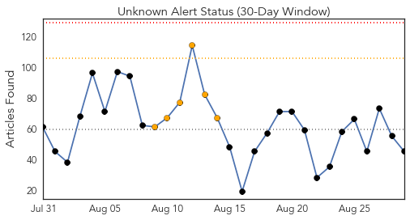
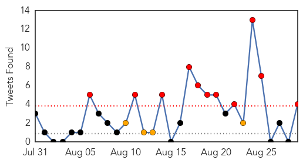
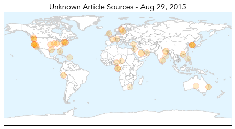
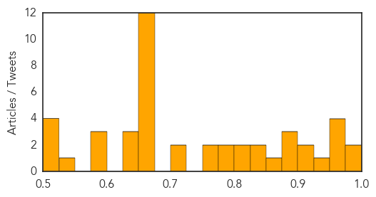

Unknown
30-Day Web Trend
0 alerts, 6 warnings

30-Day Twitter Trend
11 alerts, 4 warnings

Article Locations
Article Confidences
Top Articles:
- 0.990
- San Quentin water shut off in Legionnaires' disease scare
- 0.989
- Deaths from MERS virus surge in Saudi Arabia
- 0.973
- Illinois: Two Are Dead in Outbreak of Legionnaires’ Disease
- 0.960
- Number of foreign visitors returns to level before MERS
- 0.952
- Indiana HIV outbreak tops 180
- 0.952
- Number of foreign visitors returns to level before MERS
- 0.947
- Confirmed Legionnaires’ Disease Cases at Vets Home Now at 23 « CBS St. Louis
- 0.917
- Chicago Tribune
- 0.917
- Chicago Tribune
- 0.895
- EU says Europe can expect imported MERS cases
- 0.890
- EU health agency says Europe can expect imported MERS cases - Xinhua
- 0.883
- Cases of eye ailment SHAPU reported
- 0.869
- barfblog
- 0.850
- THE RETURN OF THE BLACK DEATH
- 0.847
- KiiiTV.com South Texas, Corpus Christi, Coastal Bend
- 0.809
- Tuberculosis: Evolving Epidemic
- 0.808
- Nine Cases of Cutaneous Anthrax Disease Diagnosed In Imilchil
- 0.799
- Health officials look for person who came in contact with rabid bat in Stanley Park - BC
- 0.783
- Marler Clark Files Multiple Lawsuits in Kapowsin Salmonella Outbreak
- 0.763
- Legionnaires' disease sends California prisoner to hospital
- 0.754
- West Chester University says buildings safe from legionella bacteria
- 0.721
- Legionnaires’ disease sends California inmate to hospital
- 0.717
- Antibiotic Resistant Salmonella in Kapowsin Pork Sickens 152
- 0.664
- More ticks carrying babesiosis parasite, raising risk of serious illness
- 0.662
- Life on Mars: NASA launches year-long isolation experiment
- 0.662
- Turkish jets join US-led coalition strikes on Islamic State group
- 0.662
- Ministers urge review of Schengen rules to boost rail security
- 0.662
- Egypt sentences Al-Jazeera English journalists to three years in prison
- 0.662
- Chad executes 10 Boko Haram members by firing squad
- 0.662
- Boko Haram fighters sentenced to death over bombing in Chad's capital
- 0.662
- US teen sentenced to 11 years for IS group support
- 0.662
- Ugandan entrepreneur uses briquettes to tackle gender and development issues
- 0.662
- Green Africa: Solar lamps to empower the poor
- 0.661
- Health board places A&E on 'High Risk' as staffing levels hit crisis point
- 0.660
- Management Takes Steps To Prevent Prison Outbreak
- 0.647
- Industry
- 0.640
- The liability of medical laboratories before the UAE courts: a case study
- 0.627
- KBS World Radio
- 0.595
- HPV and Latino Health
- 0.592
- Jordan reports two new corona virus casesHealthcare
- 0.578
- Philstar Mobile
- 0.548
- Odisha Government Ropes in Doctors from SCB Hospital to Care for Patients in Sishu Bhawan
- 0.519
- Bite Back: Campaign to get fluoride in Australian towns, with push to give power to state governments to decide instead of councils
- 0.518
- King, PM revitalise health sector
- 0.513
- After 152 with Salmonella Kapowsin Meats Suspends Operation
- 0.510
- Bite Back: Campaign to get fluoride in Australian towns, with push to give power to state governments to decide instead of councils
Top Tweets:
- 0.779
- Necesito un ataque de risa y otra cosa que no voy a mencionar
- 0.735
- RT: Es un derecho ser intolerante de vez en cuando. A veces me harto de guardarme todo para no incomodar a gente a la que no l…
- 0.513
- RT: Qué confuso llorar de emoción. No sé si soy feliz, si estoy triste, si es lindo o feo. Llorar de emoción es el híbrido de …
- 0.502
- En los aviones siempre me da dolor de cabeza, dolor de espalda, alergias, hambre, sed, sueño, deseos sexuales y flojera espiritual.
Hemmorhagic Fever
30-Day Web Trend
0 alerts, 0 warnings

30-Day Twitter Trend
0 alerts, 0 warnings

Article Locations

Article Confidences

Top Articles:
-
No articles found for Aug 29, 2015
Top Tweets:
-
No tweets found for Aug 29, 2015